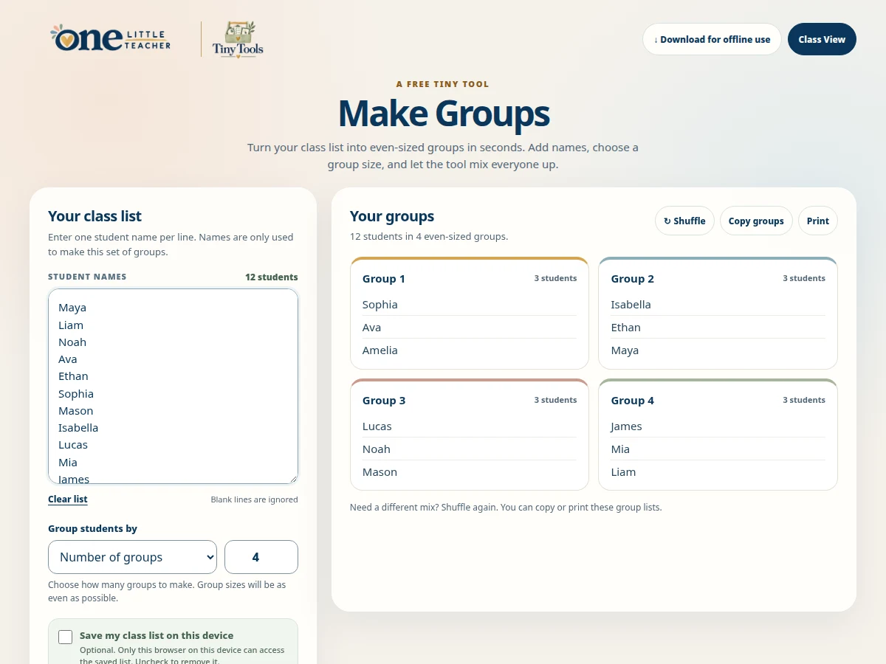

Participation
Make Groups
Mix a class list into groups with sizes as even as possible.
Free · Offline-friendly
Ways to use it
- Organize partners and group activities.
How to use it
- Enter one student name per line.
- Choose the number of groups or students per group.
- Make groups, then shuffle, copy or print the results.
Practical details
Blank lines are ignored. Saving the class list in this browser is optional.
Explore together
Choose the setup that fits your lesson or classroom routine.